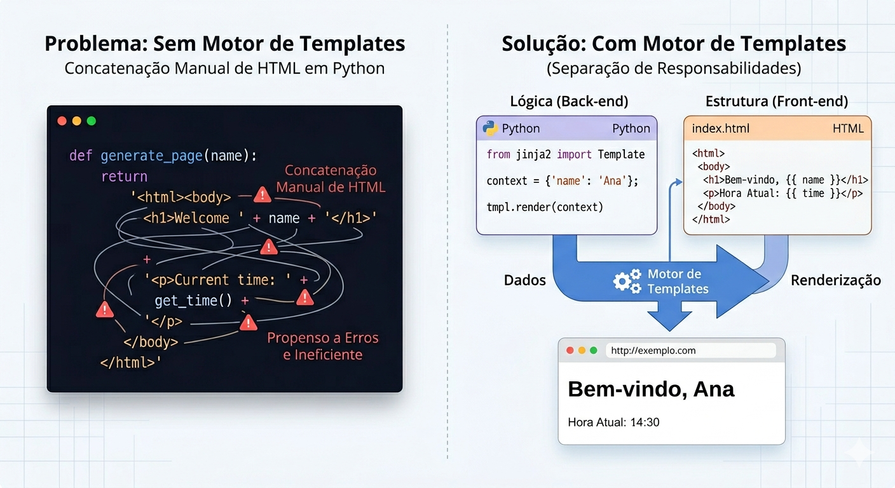
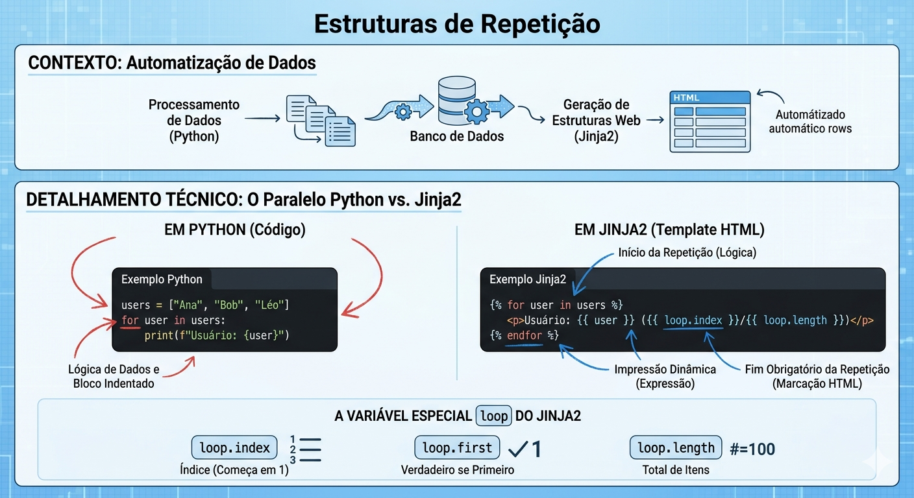
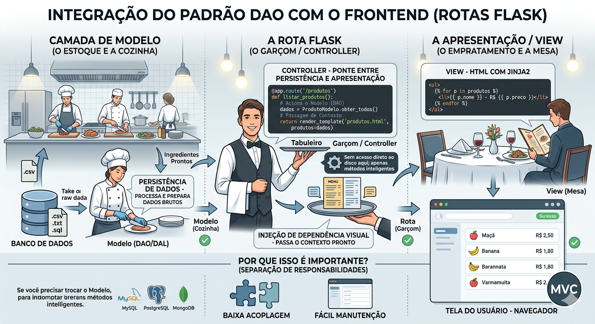

Descrição: Nesta aula vamos conceituar a renderização dinâmica de dados no HTML com o motor de templates Jinja2. Também faremos um paralelo entre as estruturas de repetição do Python e o Jinja2. Vamos trabalhar a integração do padrão DAO com o Front-end e finalizar a aula com uma atividade de construção de uma tabela dinâmica em HTML.
O Jinja2 é um motor de templates (ou Template Engine) projetado para a linguagem Python, cujo objetivo é gerar formatos baseados em texto, primariamente HTML5, de forma dinâmica. Ele funciona através de um sistema de marcação que permite que um arquivo de texto comum contenha variáveis e expressões que são substituídas por valores reais no momento em que o template é renderizado pelo servidor.
A finalidade primordial de um motor de templates é permitir a separação de responsabilidades entre a lógica de programação (back-end) e a estrutura visual (front-end). Sem essa ferramenta, o desenvolvedor teria que concatenar strings HTML manualmente dentro do código Python, o que é ineficiente e propenso a erros.

O Jinja2 opera através de delimitadores específicos que instruem o motor sobre como tratar o conteúdo:
Este exemplo demonstra como o Jinja2 transforma um arquivo HTML estático em uma página web dinâmica, separando completamente o design (Front-end) da lógica de negócios (Back-end).
O Cenário: Vamos criar uma página simples para um perfil de usuário que exibe o nome, as habilidades e uma mensagem de boas-vindas condicional (se é um usuário novo ou não).
Neste arquivo, o designer HTML cria a estrutura visual normalmente. No entanto, em vez de colocar dados reais, ele usa os "delimitadores" do Jinja2 para indicar onde os dados dinâmicos devem ser inseridos (Abrir arquivo perfil.html com o Template Jinja2 anexo).
Análise dos Delimitadores no Template:
O back-end é onde vivem os dados reais. Ele é responsável por conectar os dados com o template HTML e realizar a renderização (Abrir o arquivo app.py anexo).
Após rodar o script app.py, o Jinja2 gera o seguinte HTML puro e dinâmico
(Abrir arquivo saida_perfil.html gerado após execução do script).
A Iteração de Coleções no Jinja2 é o processo de percorrer sequências de dados (como listas de objetos ou dicionários retornados do banco de dados) para gerar elementos repetitivos no HTML. Embora a lógica seja inspirada diretamente no Python, a sintaxe do Jinja2 é adaptada para coexistir com a marcação HTML.
O objetivo é automatizar a criação de listas, tabelas ou grids. Em vez de escrever manualmente dez linhas de uma tabela para dez registros, o desenvolvedor define um único bloco de código que se repete conforme o tamanho da coleção.

Para tornar este conceito o mais prático possível, vamos imaginar que você está construindo uma Lista de Leitura Acadêmica. O objetivo é transformar uma lista do Python em uma tabela HTML organizada, usando o Jinja2 para numerar os itens automaticamente e destacar o primeiro da lista.
Aqui nós preparamos os dados. Imagine que esses livros vieram de um banco de dados.
# Dados que o Python envia para o Template
livros = ["Clean Code", "Arquitetura Limpa", "Refatoração", "Design Patterns"]
# No Flask ou Jinja puro, passamos a lista 'livros' para o HTML
# render_template('compras.html', lista_livros=livros)Aqui é onde a "mágica" da repetição acontece. Note o uso da variável especial loop.
<table>
<thead>
<tr>
<th>#</th>
<th>Nome do Livro</th>
<th>Status</th>
</tr>
</thead>
<tbody>
{# Iniciando o laço de repetição #}
{% for livro in lista_livros %}
<tr>
<td>{{ loop.index }}</td>
<td>{{ livro }}</td>
<td>
{# Usando loop.first para dar um destaque especial ao primeiro item #}
{% if loop.first %}
<strong>PRÓXIMA LEITURA</strong>
{% else %}
Aguardando
{% endif %}
</td>
</tr>
{% endfor %} {# O fechamento é obrigatório! #}
</tbody>
</table>
<p>Total de livros na estante: {{ loop.length }}</p>
{# Nota: loop.length funciona apenas dentro do bloco for no Jinja2 clássico #}O Jinja2 vai processar o código acima e entregar ao navegador um HTML estático pronto:
| # | Nome do Livro | Status |
|---|---|---|
| 1 | Clean Code | PRÓXIMA LEITURA |
| 2 | Arquitetura Limpa | Aguardando |
| 3 | Refatoração | Aguardando |
| 4 | Design Patterns | Aguardando |
Total de livros na estante: 4
A integração ocorre quando a rota (ou view function) no Flask atua como o Controller em uma arquitetura MVC, servindo de ponte entre a persistência de dados (DAO/DAL) e a apresentação (View).
O foco é a Injeção de Dependência Visual (Context Passing). A rota não deve conter regras de acesso ao disco; ela deve apenas acionar os métodos inteligentes da camada de modelo para obter os dados prontos para exibição.
Para explicar a integração entre Flask, Camada de Modelo e Jinja2, vamos usar uma analogia do mundo real: Um Restaurante. Imagine que o seu sistema web é um restaurante organizado. Para ele funcionar bem, cada um tem um papel definido (o famoso MVC - Model, View, Controller).
É aqui que os dados vivem (banco de dados, arquivos CSV, etc.). No nosso restaurante, é o estoque e o preparo inicial.
A rota atua como o intermediário. Ela recebe o pedido do cliente (o usuário que acessa a URL) e coordena a entrega.
É o arquivo HTML com Jinja2. É como o cliente vê a comida.
1. Usuário: Acessa meusite.com/produtos.
Rota (Controller):
@app.route('/produtos')
def listar_produtos():
# Aciona o Modelo (DAO) para pegar dados limpos
dados = ProdutoModelo.obter_todos()
# Passagem de Contexto: entrega o "tabuleiro" para a View
return render_template('produtos.html', produtos=dados)Jinja2 (View): Recebe o contexto e gera o HTML:
<ul>
{% for p in produtos %}
<li>{{ p.nome }} - R$ {{ p.preco }}</li>
{% endfor %}
</ul>Se você precisar trocar o seu arquivo de dados .txt por um banco de dados profissional, você só altera o Modelo. O seu Controller (rota) e a sua View (HTML) continuam funcionando exatamente como antes. Isso é o que chamamos de código de "baixa acoplagem" e fácil manutenção.

O Cenário: Você foi encarregado de criar a tela de listagem de um novo aplicativo de streaming de áudio. O back-end já é capaz de obter as informações das faixas, mas a interface do usuário está em branco.
Seu Objetivo: Transformar dados abstratos (uma lista de músicas no Python) em uma interface legível para o usuário final. Você aplicará o conceito de renderização em grid utilizando Flask e Jinja2 para construir uma tabela dinâmica.
Para concluir este desafio, você precisará criar e configurar os seguintes arquivos:
1. O Back-end (app.py)
2. A Fonte de Dados (Simulação de Banco de Dados)
3. O Front-end (Template HTML com Jinja2)
Ao executar o seu app.py e acessar a rota no navegador, você deverá visualizar uma tabela preenchida com os dados da sua lista Python.
Após concluir e visualizar a tabela, vá até o seu app.py, deixe a sua lista musicJ vazia (musicJ = [ ]) e recarregue a página. A sua aplicação não deve apresentar erros de índice, mas sim exibir a mensagem de estado vazio que você configurou.
Ao concluir esta aula, você compreendeu como o motor de templates Jinja2 viabiliza a separação de responsabilidades ao automatizar a renderização dinâmica de dados do back-end para o front-end. Através da integração do padrão DAO com rotas Flask, foi possível transformar dados brutos em interfaces tabulares organizadas e resilientes a falhas. Esta base técnica permite o desenvolvimento de aplicações web com código de baixa acoplagem, facilitando manutenções futuras e a escalabilidade do projeto.
Vamos abordar o tratamento de dados via POST, exigindo a conversão segura de strings HTML para tipos numéricos com suporte de blocos try/except para prevenir falhas. No desafio, vocês deverão integrar formulários ao banco de dados, utilizando tratamento de exceções para validar entradas e instanciando classes para persistência via DAO.